Measured results of running Gemma 4 on the Qualcomm SoC NPU with the ailia LLM QNN backend, compared with CPU execution on the same device.
For how to use the QNN backend, see the ailia LLM NPU (QNN) Guide.
The following results were measured with Gemma 4 on two devices. Snapdragon 8+ Gen 1 (SM8475 / Hexagon v69) uses the E2B FP16 model, and Snapdragon 7s Gen 3 (SM7635 / Hexagon v73) uses the E2B and E4B Int16 models. All were measured with QAIRT 2.47, a context length of 8192 and the AR-256 / AR-1 configuration.
The CPU numbers run the same Q4_0 GGUF through the standard llama.cpp path on the same device (8 decoder workers, context 8192). The shipping configuration is the build with OpenMP disabled, which is the "CPU" column. "CPU (OpenMP)" is a comparison build made with GGML_OPENMP=ON and OMP_NUM_THREADS=2.
Throughput with 81 input tokens and 1,000 generated tokens.
| Device | Model | CPU | CPU (OpenMP) | NPU (QNN) | Effect of the NPU |
|---|---|---|---|---|---|
| SM8475 (Hexagon v69) | E2B / FP16 | 9.971 tokens/s | 8.482 tokens/s | 8.062 tokens/s | 0.81x |
| SM7635 (Hexagon v73) | E2B / Int16 | 5.805 tokens/s | 4.195 tokens/s | 6.410 tokens/s | 1.10x faster |
| SM7635 (Hexagon v73) | E4B / Int16 | 3.351 tokens/s | 3.203 tokens/s | 3.128 tokens/s | 0.93x |
With E2B on SM7635, NPU decode is 1.10x faster than the CPU (1.53x faster than the OpenMP build). On the other hand, E2B on SM8475 (0.81x) and E4B on SM7635 (0.93x) are slower than the CPU. Decode processes one token at a time, so it is dominated by weight loading and does not benefit much from the parallel compute of the NPU. With MTP, NPU decode reaches 1.01x the CPU for E2B on SM8475 and 1.63x for E2B on SM7635 (MTP Benchmark).
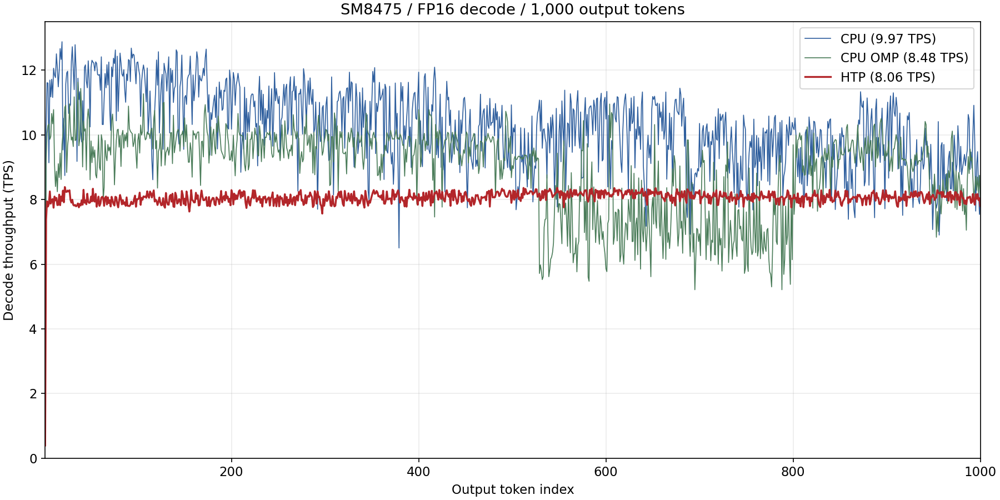
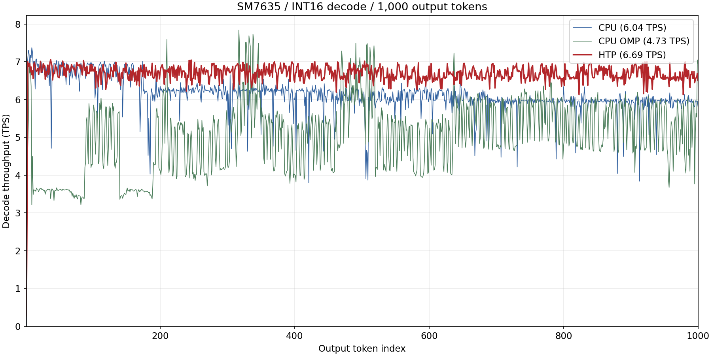
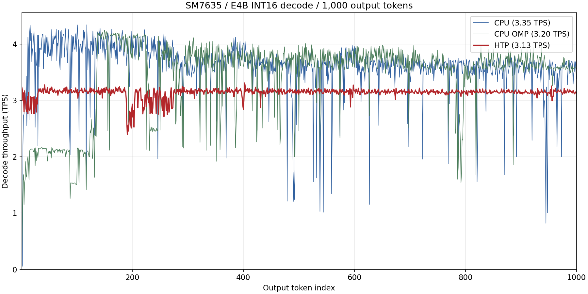
Throughput (tokens/s) for input lengths from 64 to 2,048 tokens. After a two-token warmup, SetPrompt is called twice without evaluation to clear the KV cache, and exactly one token is generated at each input length.
| Device / model / path | 64 | 128 | 256 | 512 | 1024 | 2048 |
|---|---|---|---|---|---|---|
| SM8475 E2B CPU | 109.359 | 95.722 | 88.243 | 85.663 | 79.940 | 71.244 |
| SM8475 E2B CPU (OpenMP) | 54.184 | 55.333 | 61.476 | 60.319 | 55.500 | 51.064 |
| SM8475 E2B NPU (FP16) | 76.244 | 144.406 | 277.775 | 302.667 | 301.791 | 299.827 |
| SM7635 E2B CPU | 91.550 | 77.064 | 80.496 | 76.187 | 69.757 | 59.192 |
| SM7635 E2B CPU (OpenMP) | 27.441 | 49.999 | 62.793 | 70.965 | 69.228 | 56.059 |
| SM7635 E2B NPU (Int16) | 33.601 | 66.523 | 130.329 | 133.404 | 131.367 | 130.252 |
| SM7635 E4B CPU | 1.697 | 29.105 | 28.417 | 62.663 | 64.383 | 60.897 |
| SM7635 E4B CPU (OpenMP) | 6.746 | 27.824 | 40.097 | 61.877 | 66.980 | 54.372 |
| SM7635 E4B NPU (Int16) | 20.304 | 40.890 | 80.700 | 83.758 | 83.314 | 78.258 |
actual input tokens / time of the first generate call.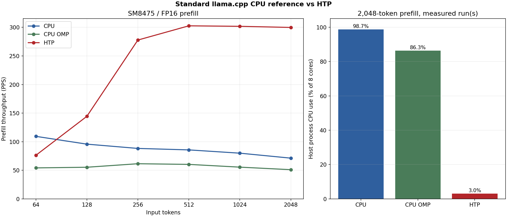
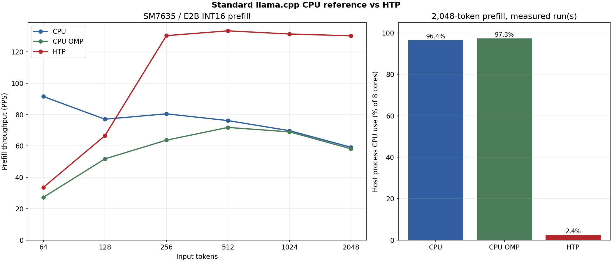
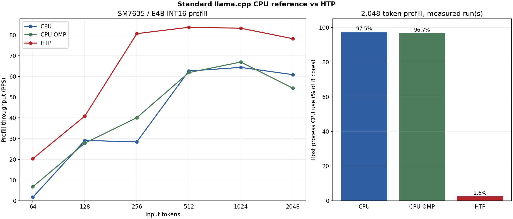
Process CPU time measured around the first generate call of a 2,048-token prefill, expressed as a share of all 8 cores fully occupied (8 cores = 100%). This is the utilization of the application process, not of the whole device.
| Device / model | CPU | CPU (OpenMP) | NPU (QNN) |
|---|---|---|---|
| SM8475 E2B | 98.7% | 86.3% | 3.0% |
| SM7635 E2B | 96.4% | 97.3% | 2.4% |
| SM7635 E4B | 97.5% | 96.7% | 2.6% |
On the NPU, CPU use during prefill stays around 3%, leaving the CPU available for the rest of the application. Running on the CPU occupies nearly all 8 cores, which raises heat and interferes with other work.
Medians over the same 10 images at 768x768 with 100 output tokens each. TTFT is the prompt setup including the image encoder plus the first generate call, excluding model opening.
| Device / model / path | TTFT (median) | Decode (median) |
|---|---|---|
| SM8475 E2B CPU | 83.63 s | 12.081 tokens/s |
| SM8475 E2B CPU (OpenMP) | 128.22 s | 7.491 tokens/s |
| SM8475 E2B NPU (FP16) | 6.60 s | 7.033 tokens/s |
| SM7635 E2B CPU | 95.01 s | 5.891 tokens/s |
| SM7635 E2B CPU (OpenMP) | 97.45 s | 3.569 tokens/s |
| SM7635 E2B NPU (Int16) | 8.35 s | 6.444 tokens/s |
| SM7635 E4B CPU | 115.03 s | 3.332 tokens/s |
| SM7635 E4B CPU (OpenMP) | 96.90 s | 2.642 tokens/s |
| SM7635 E4B NPU (Int16) | 15.01 s | 3.098 tokens/s |
Image TTFT is about 12.7x faster for E2B on SM8475, about 11.4x faster for E2B on SM7635 and about 7.7x faster for E4B. Both the CPU and the NPU consume the same 768x768 pixels and the same 256 image embeddings.
Medians over 10 FLEURS recordings (2 each in 5 languages, generated to natural EOS with a 256-token cap). TTFT is the prompt setup including the audio encoder plus the first generate call, excluding model opening.
| Device / model / path | TTFT (median) | Decode (median) | Output tokens |
|---|---|---|---|
| SM8475 E2B CPU | 37.29 s | 10.416 tokens/s | 21-89 |
| SM8475 E2B CPU (OpenMP) | 36.49 s | 10.539 tokens/s | 21-89 |
| SM8475 E2B NPU (FP16) | 4.06 s | 6.495 tokens/s | 21-90 |
| SM7635 E2B CPU | 47.22 s | 5.166 tokens/s | 21-89 |
| SM7635 E2B CPU (OpenMP) | 35.37 s | 3.846 tokens/s | 21-89 |
| SM7635 E2B NPU (Int16) | 6.98 s | 6.356 tokens/s | 22-60 |
| SM7635 E4B CPU | 89.91 s | 3.053 tokens/s | 21-91 |
| SM7635 E4B CPU (OpenMP) | 45.99 s | 2.947 tokens/s | 21-91 |
| SM7635 E4B NPU (Int16) | 12.37 s | 3.018 tokens/s | 21-91 |
Audio TTFT is about 9.2x faster for E2B on SM8475, about 6.8x faster for E2B on SM7635 and about 7.3x faster for E4B.
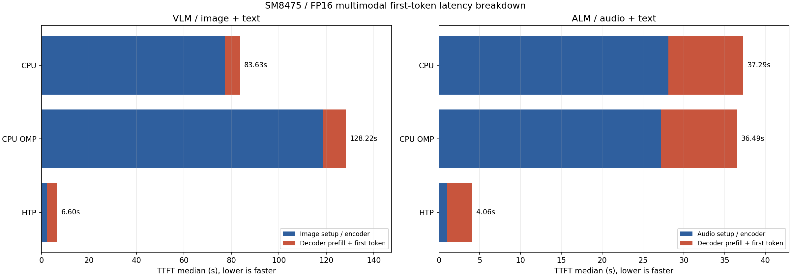
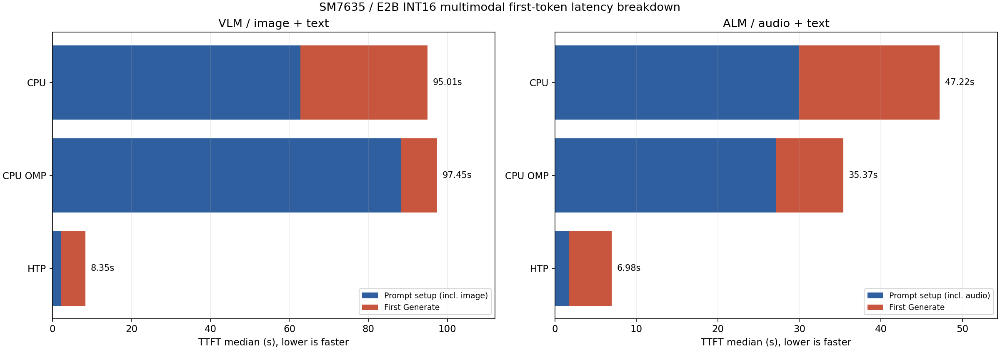
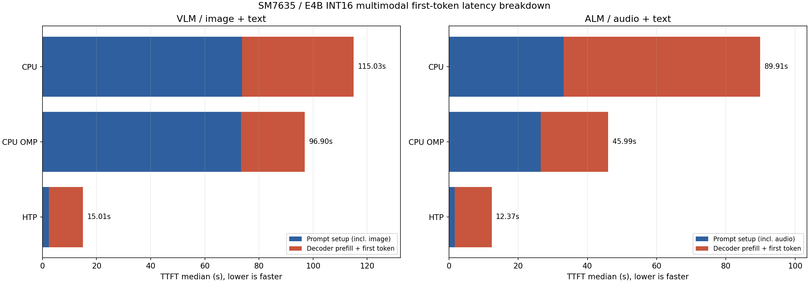
E2B: memory usage on SM7635 (Hexagon v73) while running the LLM, VLM and ALM configurations with 8 generated tokens (in MiB, context length 8192). The CPU path uses the Q4_0 GGUF with the BF16 mmproj, and the NPU path uses the Int16 QNN Model. Models are loaded with mmap, so anonymous memory (RssAnon, the working memory actually allocated) and file-backed mappings (RssFile, reusable page cache) are listed separately. Peak is the peak resident size of the process (VmHWM).
| Model | Workload | Path | VmHWM | RssAnon | RssFile |
|---|---|---|---|---|---|
| E2B | LLM | CPU | 4574.2 | 1524.1 | 2896.5 |
| E2B | LLM | NPU (Int16) | 1666.8 | 386.4 | 1276.2 |
| E2B | VLM | CPU | 4881.2 | 2512.4 | 40.3 |
| E2B | VLM | NPU (Int16) | 2161.2 | 673.3 | 1483.7 |
| E2B | ALM | CPU | 4873.7 | 2623.0 | 1509.1 |
| E2B | ALM | NPU (Int16) | 2202.5 | 591.6 | 1606.7 |
mallopt(M_PURGE, 0) brings it down to about 23 MiB.E4B was measured on the same device as a single LLM run per path with 81 input tokens and 100 output tokens (in MiB). The RssAnon / RssFile split was not captured, so live PSS is listed instead. These conditions differ from the E2B table.
| Model | Workload | Path | VmHWM | Live PSS |
|---|---|---|---|---|
| E4B | LLM | CPU | 5569.8 | 4432.7 |
| E4B | LLM | CPU (OpenMP) | 5518.2 | 3922.2 |
| E4B | LLM | NPU (Int16) | 1976.0 | 1801.8 |
With E4B as well, the NPU peak is about a third of the CPU path. This measurement was taken with the device at Thermal Status 1 and is affected by Android page reclamation.
The following results were measured with Gemma 4 on two devices. Snapdragon X Plus (SC8380XP / Hexagon v73) uses the E2B and E4B FP16 models on Windows 11 Pro, and QCS6490 (Hexagon v68) uses the E2B Int16 model with ailia LLM 1.5.0.1 on Windows 11 IoT Enterprise LTSC. Both are 8-core devices, measured with QAIRT 2.47, a context length of 8192 and the AR-256 / AR-1 configuration.
The CPU numbers run the Q4_0 GGUF through the standard llama.cpp path on the same device (OpenMP disabled, with the 4 performance cores as workers). The GPU numbers run the same GGUF on the Snapdragon X Plus Adreno X1-45 with the llama.cpp OpenCL backend. The GPU on QCS6490 was not measured.
Throughput with 81 input tokens and 1,000 generated tokens.
| Device | Model | CPU | GPU | NPU (QNN) | Effect of the NPU |
|---|---|---|---|---|---|
| SC8380XP (Hexagon v73) | E2B / FP16 | 32.505 tokens/s | 12.590 tokens/s | 7.988 tokens/s | 0.25x |
| SC8380XP (Hexagon v73) | E4B / FP16 | 15.230 tokens/s | 7.161 tokens/s | 4.651 tokens/s | 0.31x |
| QCS6490 (Hexagon v68) | E2B / Int16 | 7.983 tokens/s | — | 4.405 tokens/s | 0.55x |
NPU decode runs at 0.25x to 0.55x of the CPU, so it is slower than the CPU, but its throughput is stable.
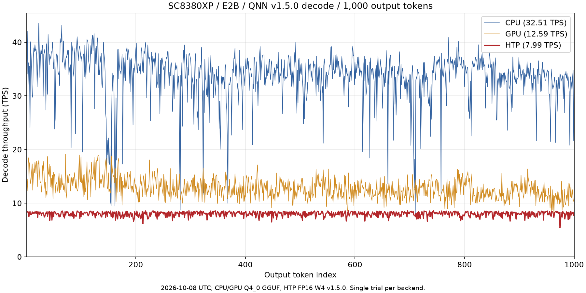
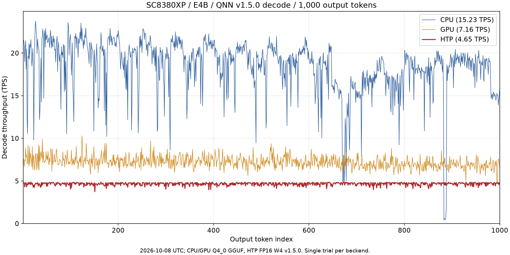
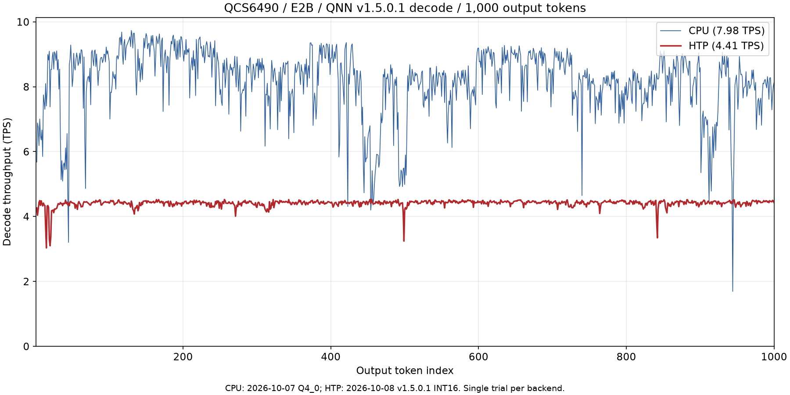
Throughput (tokens/s) as the input length varies from 64 to 2,048 tokens, measured the same way as on Android.
| Device / model / path | 64 | 128 | 256 | 512 | 1024 | 2048 |
|---|---|---|---|---|---|---|
| SC8380XP E2B CPU | 249.314 | 205.403 | 214.986 | 194.638 | 176.262 | 155.627 |
| SC8380XP E2B GPU | 152.814 | 184.829 | 201.471 | 190.109 | 168.583 | 149.012 |
| SC8380XP E2B NPU (FP16) | 116.418 | 229.981 | 443.136 | 467.341 | 461.637 | 460.136 |
| SC8380XP E4B CPU | 83.793 | 98.738 | 115.542 | 106.402 | 97.419 | 80.109 |
| SC8380XP E4B GPU | 80.661 | 102.021 | 111.457 | 110.693 | 101.195 | 93.148 |
| SC8380XP E4B NPU (FP16) | 60.101 | 119.511 | 254.001 | 262.182 | 257.062 | 258.672 |
| QCS6490 E2B CPU | 63.773 | 73.745 | 68.787 | 59.803 | 50.623 | 51.408 |
| QCS6490 E2B NPU (Int16) | 49.211 | 104.323 | 203.224 | 208.770 | 181.354 | 201.447 |
With a 2,048-token input, the NPU is about 2.96x faster than the CPU for E2B on SC8380XP, about 3.23x faster for E4B, and about 3.92x faster for E2B on QCS6490. At 64 tokens the NPU is slower than the CPU, because the fixed-length AR-256 graph is mostly padding.
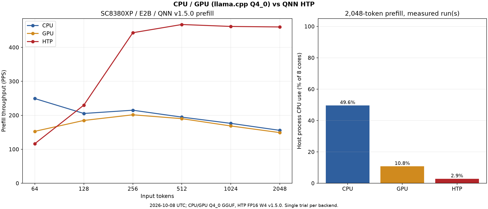
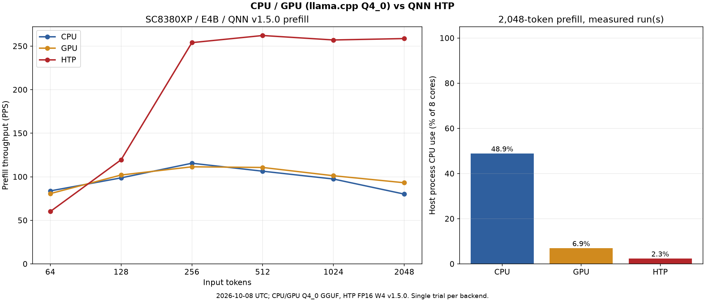
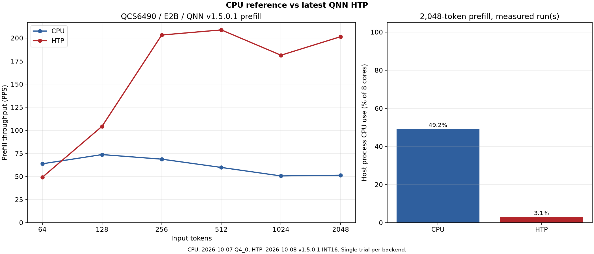
Process CPU time during the first generate call of a 2,048-token prefill, expressed as a share of all 8 cores fully occupied (8 cores = 100%).
| Device / model | CPU | GPU | NPU (QNN) |
|---|---|---|---|
| SC8380XP E2B | 49.6% | 10.8% | 2.9% |
| SC8380XP E4B | 48.9% | 6.9% | 2.3% |
| QCS6490 E2B | 49.2% | — | 3.1% |
The CPU path runs 4 workers on the performance cores, so it stays around 50%. On the NPU, CPU use stays around 3%.
The image input is one 768x768 image with 100 output tokens, and the audio input is a transcription of one English recording (16 kHz mono). Each is a single run. TTFT is the prompt setup including the encoder plus the first generate call, excluding model opening. On the CPU and GPU paths, the image and audio encoders run on the CPU.
| Device / model | Input | Path | TTFT | Decode | Output tokens |
|---|---|---|---|---|---|
| SC8380XP E2B | Image | CPU | 55.48 s | 37.546 tokens/s | 100 |
| SC8380XP E2B | Image | GPU | 57.74 s | 12.770 tokens/s | 100 |
| SC8380XP E2B | Image | NPU (FP16) | 7.06 s | 7.961 tokens/s | 100 |
| SC8380XP E2B | Audio | CPU | 28.13 s | 37.924 tokens/s | 33 |
| SC8380XP E2B | Audio | GPU | 27.86 s | 13.064 tokens/s | 33 |
| SC8380XP E2B | Audio | NPU (FP16) | 4.55 s | 8.162 tokens/s | 33 |
| SC8380XP E4B | Image | CPU | 54.09 s | 20.161 tokens/s | 100 |
| SC8380XP E4B | Image | GPU | 57.98 s | 7.230 tokens/s | 100 |
| SC8380XP E4B | Image | NPU (FP16) | 10.22 s | 4.644 tokens/s | 100 |
| SC8380XP E4B | Audio | CPU | 27.67 s | 19.444 tokens/s | 33 |
| SC8380XP E4B | Audio | GPU | 33.24 s | 7.094 tokens/s | 33 |
| SC8380XP E4B | Audio | NPU (FP16) | 7.11 s | 4.606 tokens/s | 33 |
| QCS6490 E2B | Image | CPU | 73.81 s | 8.603 tokens/s | 100 |
| QCS6490 E2B | Image | NPU (Int16) | 9.13 s | 4.361 tokens/s | 100 |
| QCS6490 E2B | Audio | CPU | 34.85 s | 9.081 tokens/s | 33 |
| QCS6490 E2B | Audio | NPU (Int16) | 7.08 s | 4.373 tokens/s | 33 |
Compared with the CPU, NPU TTFT for image input is about 7.9x faster for E2B on SC8380XP, about 5.3x faster for E4B and about 8.1x faster for E2B on QCS6490. For audio input it is about 6.2x, 3.9x and 4.9x faster, respectively.
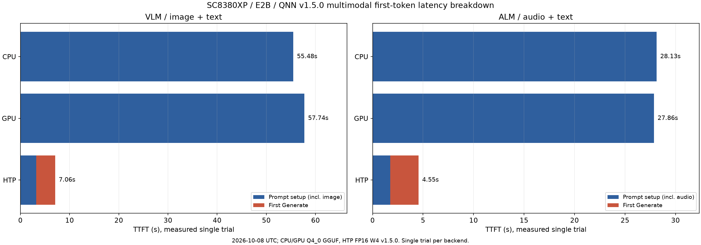
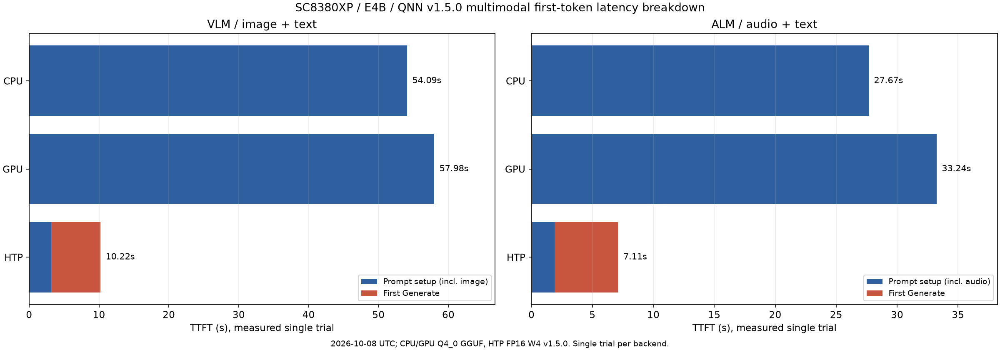
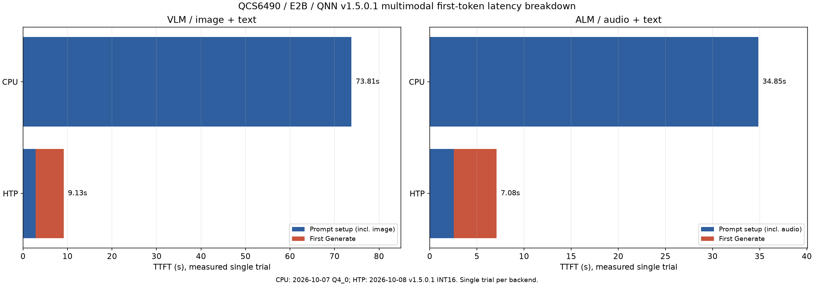